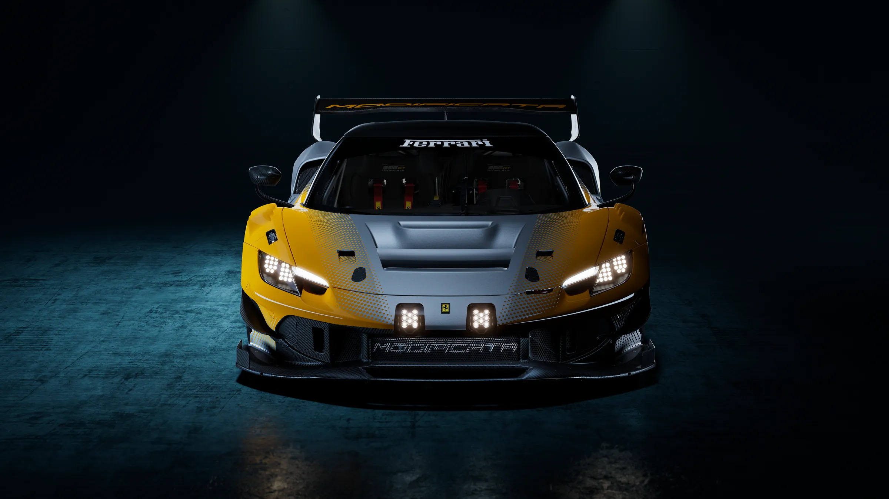
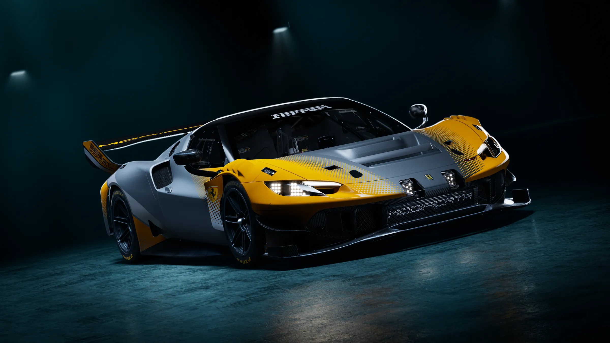
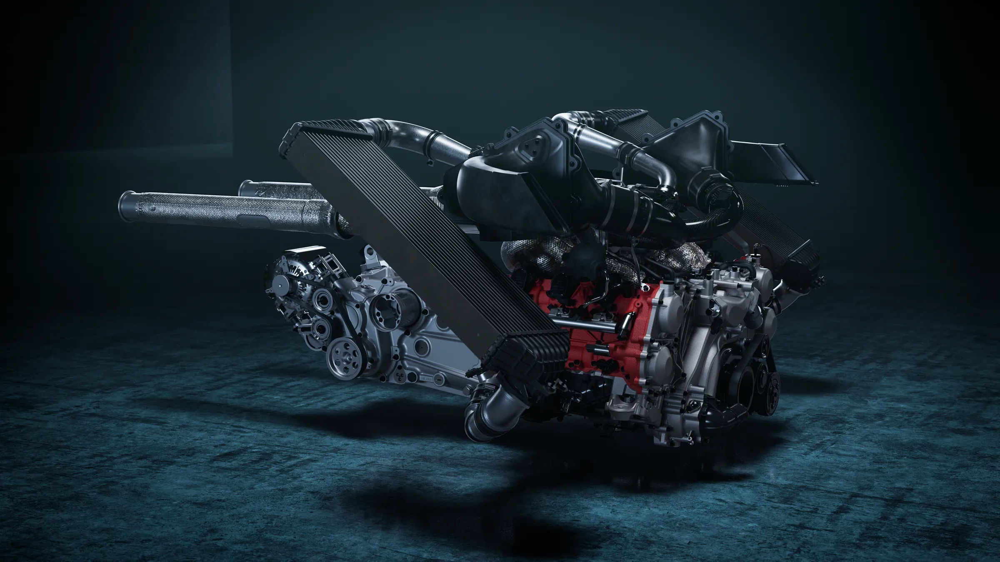
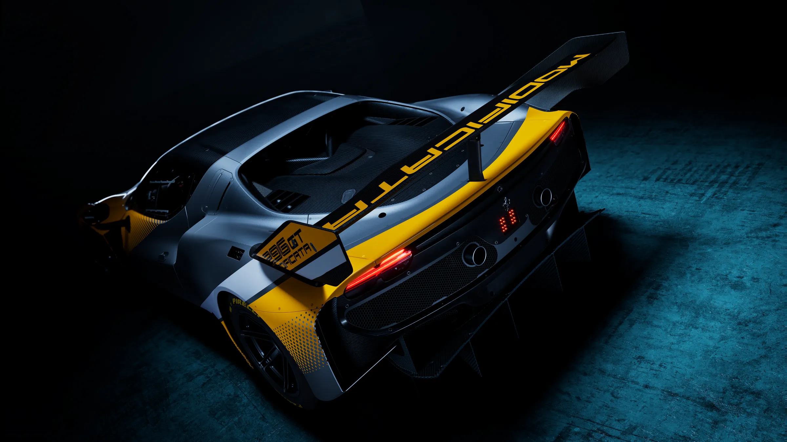
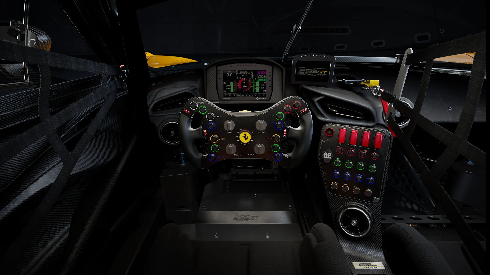
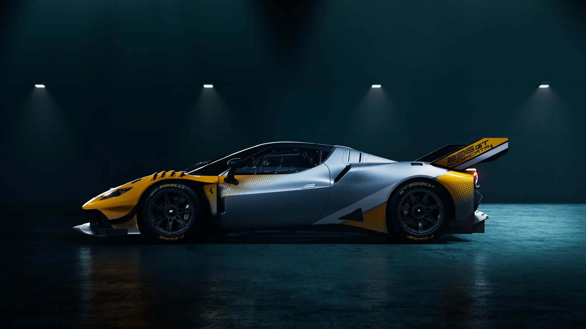
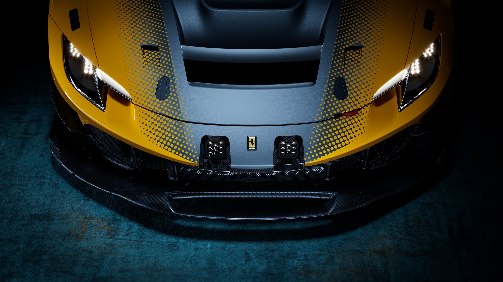

The most extreme model yet created for the Club Competizioni GT program

1The evolution
The 296 GT Modificata retains the architecture and unmistakable racing pedigree of the 296 GT3 Evo, freed from the regulatory constraints that govern its competition counterpart. The result is a special version of an existing model engineered to realize the platform’s full potential, pushing technology, performance, and driving pleasure to new heights.
Created exclusively for the Club Competizioni GT program and produced in exceptionally limited numbers, the 296 GT Modificata offers an uncompromising expression of Ferrari performance, conceived for the pure exhilaration of non-competitive track driving.

2The power unit
The 296 GT Modificata is powered by the latest iteration of the rear-mid mounted 120° twin-turbo V6 architecture that has successfully powered both Ferrari production and race models. Developed unfettered by the constraints imposed by motorsports or technical regulations, the 2,992 cc engine produces 730 cv—130 cv more than the rules-restricted 296 GT3 Evo.
Extensive development of the engine’s key components and systems, including its rotating assembly, camshafts, intake system, intercoolers and turbochargers, enables unprecedented performance for a Ferrari GT model. With a benchmark specific output of 244 cv/l, power is delivered seamlessly and progressively through a six-speed sequential gearbox with dedicated ratios, contributing to a top speed of over 300 km/h.

3Aerodynamics
To complement the increase in power, the 296 GT Modificata’s aerodynamics and cooling systems were re-engineered to meet the car’s greater performance demands. A new front hood maximizes heat dissipation, while revised vents and a dedicated airflow-management vane optimize thermal management during intensive track use.
An all-new slotted front splitter improves underfloor efficiency, generating additional downforce and enhancing high-speed stability. At the rear, a newly developed wing improves aerodynamic efficiency while preserving the car’s optimal balance and predictable dynamic behavior.

A coach in the second seat, an intercom, and real-time feedback for every session.
4The cabin
The cabin was developed around the driver while accommodating a passenger without compromising safety or functionality. Changes to the roll cage made it possible to install a second seat, complemented by a dedicated footrest and integrated intercom system.
The two-seat configuration allows a coach to accompany the driver and provide real-time feedback throughout each session. This makes the process of refining technique and improving performance more effective, while creating a shared and more rewarding track experience.

5Braking
New front brake discs, an additional air intake and an all-new cooling duct improve the braking system’s thermal management, providing more consistent performance and greater reliability.
The Motorsport ABS system delivers stable, predictable braking with precise modulation, making the car’s performance more accessible to drivers with varying levels of track experience.
Limitless possibilitiesThe 296 GT Modificata combines standard equipment engineered to maximize effectiveness on track with a range of options offering extensive scope for personalization. The result balances function, exclusivity, and freedom of expression, allowing each owner to create a truly individual car.

6The programme
Conceived for non-competitive track use, the Ferrari 296 GT Modificata was created for the Club Competizioni GT program, offering clients the opportunity to develop their driving potential in an exclusive setting.
The car is intended exclusively for track-day use and participation in Ferrari Club Competizioni GT events. This members-only program gives Ferrari clients access to some of the world’s most prestigious circuits. Purchase of the 296 GT Modificata includes two years, or 12 rounds, of participation, allowing owners to experience the car across top global circuits with distinct layouts and technical characteristics.
7Technical specifications
{{DEALER}}
The 296 GT Modificata is offered exclusively through the Club Competizioni GT program, for track use only. Speak to the team about availability and the steps to join.
Destination pending — dealer Inquire form